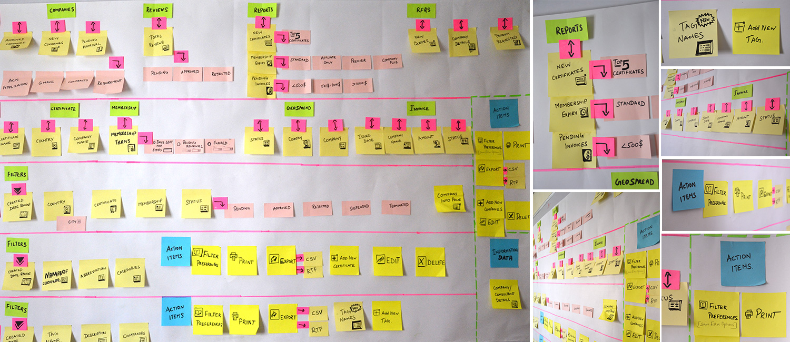
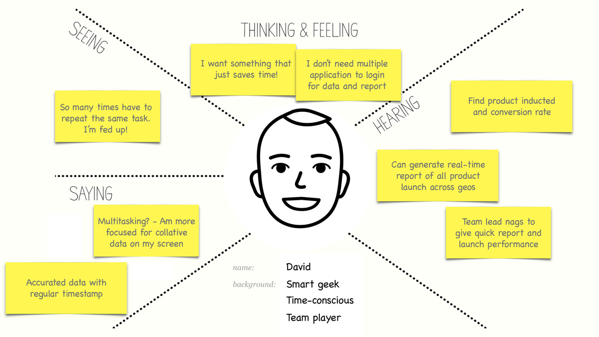
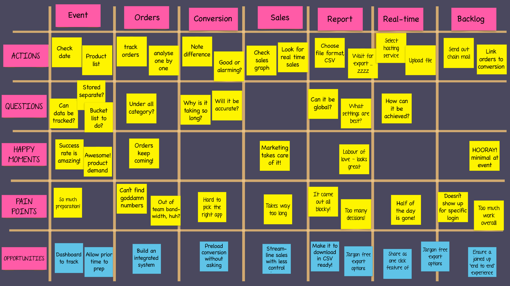
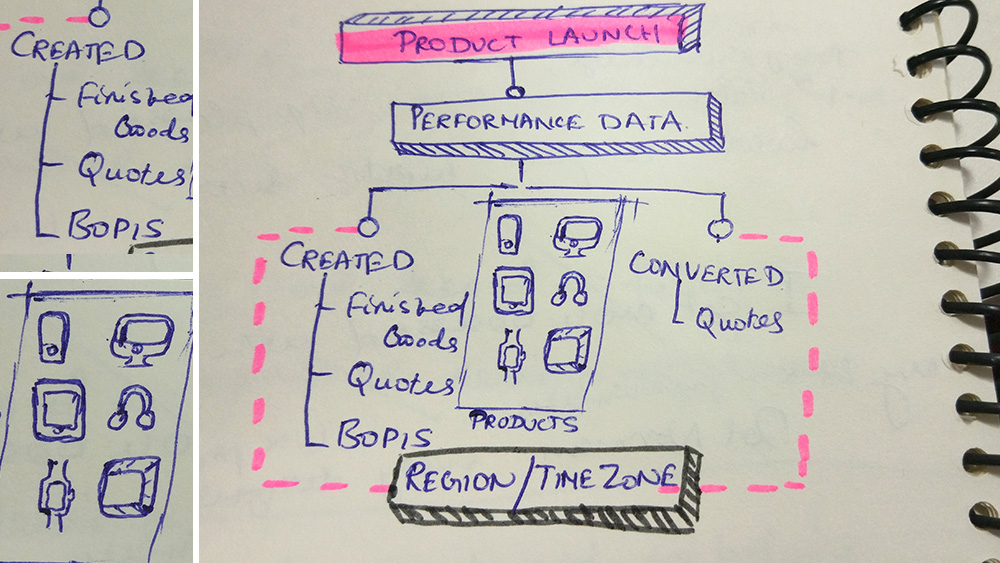

The client company sets one of the world’s most effective product launch strategies, that creates worldwide focus on its brand, and enables the social stampede to begin. A measurement strategy that precisely covers every product's business performance in a launch is what required.
Planning the most awaited product launch (at times, multiple products) across the globe and await to track business conversion can be a real pain. If it has to be narrowed down to particular item in a launch, finding the exact rate of conversion at specific level is way out of control within recommended time frame.
I was assigned to hold responsible for the design experience that we provide are relevant, evolving with the demands of our stakeholders. I was intuitive in constantly asking questions, seeking out new insights, review wireframe at multiple levels and deliver as promised.
Working closely with other interaction designers and the development team came up with concept presentation, information architecture and seemingly endless design layouts. Taking UI and interaction to a different level of experience and access to the application.
Streamlined performance data that quantify every product's sales progression. It required to be more accurate for every intervals, showing appropriate conversion rate effectively. The methods to deploy usability, painless UX while striving exact figures categorized in respective levels seemed to be very challenging.
A kick-off meeting was held to define the scope of this project and to discuss the content. Why? Questions were asked. Why would the user want certain pieces, and not others? Which were most useful? Which could we represent in a meaningful way? How could we package the data to weed out exact figures from the rest?
To answer these questions, there was a need to dig into the data to find out exactly what statistics launch performance could generate. Started with user research, whiteboarding, linking groups of statistics with the defined objectives and came up with user journey mapping!
I created a quick persona out of pocketful users completely based out of user research. This really helped to envision user goals and hopefully gain a better understanding for why and how they anticipate to use the application.

The users of this application are primarily trying to track how many orders were originally inducted into the system, then how many got created as actual orders and from those created orders, how many were converted into Sales orders. What is most important to the users is the created and converted orders. The difference between the inducted orders and the created orders is the backlog. The backlog keeps changing based on how many orders they bucket under created each day.

Knowing who the main users will be and what their needs are, I organize my thoughts by making preliminary task flows. This helps me carefully think through every step a user may take.
With a clear idea of user needs and approaches that could make our goal successful, I delved further into wireframe by first sketching. This blurred the lines between physical paper prototype and real time scenarios.
Came up with a scalable design for the database, pretty straight forward layout design cultivating a clean user pathways laid out from the research findings
Client got truly delighted with the business betterment and optimism the design could deliver. It increased the proximity of tracking sales order conversion for every product launch from 55% to 92%.
Never to hide an awesome product with unnecessary details and nothing bad in doing so. Good UI cannot always gurantee success. Intuitive design that solves problems, acheives results and communicates messages are more important.